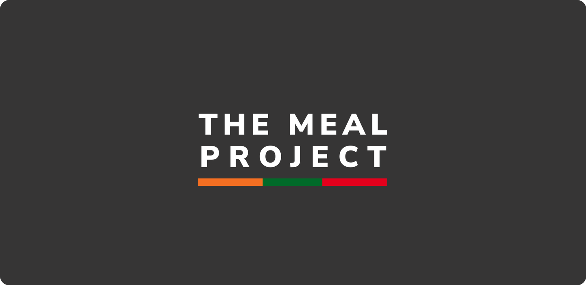

[Project genre] [Business / industry]
the Meal Project
[Two or three sentences: what the Meal Project is, who it's for, and what you designed.]

“Bad design is smoke, while good design is a mirror.” – Juan-Carlos Fernandez
01
Problem
[What was broken, missing or needed? Who was affected, and what did the client or brief ask for?]
How might we…[reframe the problem as a question]?
02
Research
[How did you learn about the users and the space? Interviews, competitor audits, moodboards, data — and the key insights you found.]
- Insight 01[what you found]
- Insight 02[what you found]
- Insight 03[what you found]
research visual
03
Exploration
[Sketches, wireframes, directions you tried and dropped. Why did the chosen direction win?]
sketches
wireframes
direction A
direction B
04
Outcome
[The final design. What shipped, and what changed because of it (results, feedback, numbers)?]
outcome visual
final screen
final screen
- [+00%][what improved]
- [+00%][what improved]
- [+00%][what improved]
05
Reflection
[What did this project teach you? What would you do differently next time?]
Next time I’d… [one thing you’d do differently]
Skills I learned or stretched
- [new skill]
- [tool used]
- [method tried]